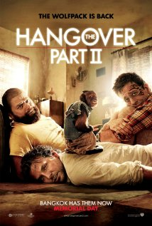

ReviewSkimmer.com
Charts
Presentation
About
The Hangover Part II

"So please don't be like me and millions of other people, don't
waste
your money."
—
southtroyballa
"If you want some creativity and originality for your
money
, don't bother."
—
pauljraab
"It was in fact so
bad
that I felt embarrassed for them."
—
endura-1
"The
jokes
are the same, just dirtier and more low-brow to get shock reaction."
—
pauljraab
"I, like so many others,
loved
The Hangover."
—
Terrell Howell (KnightsofNi11)